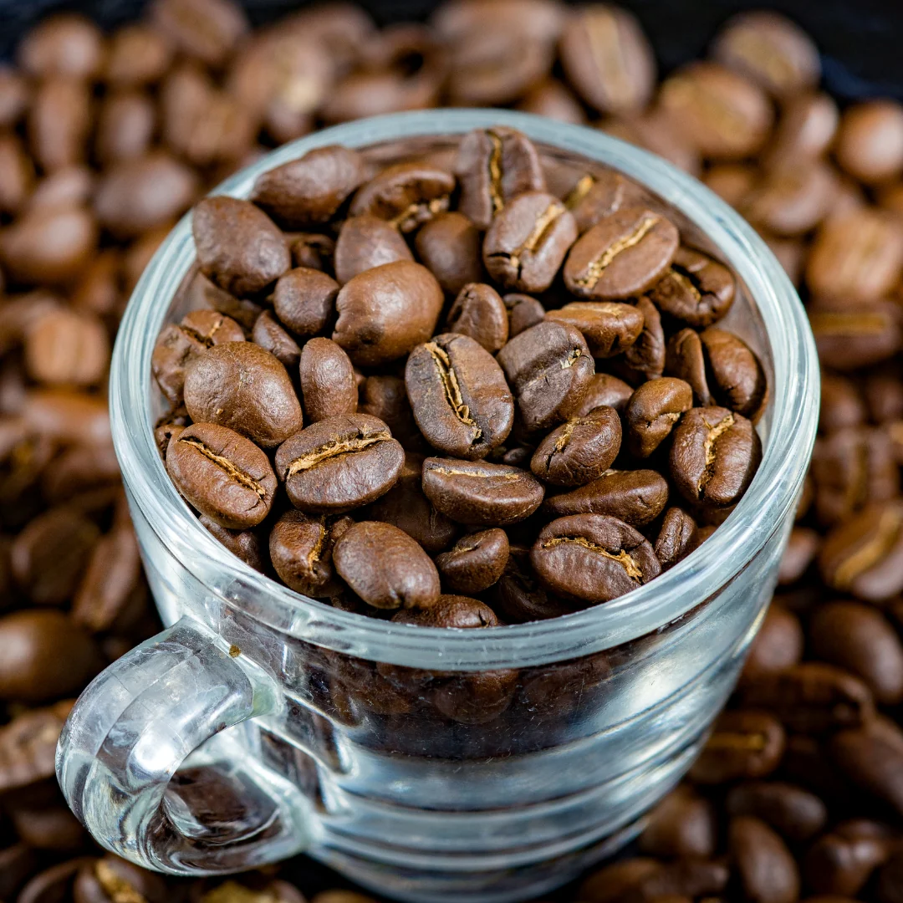
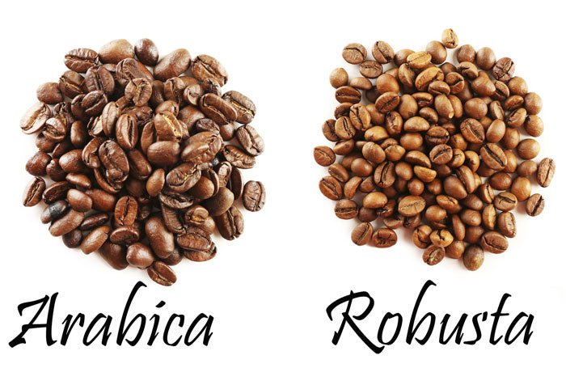
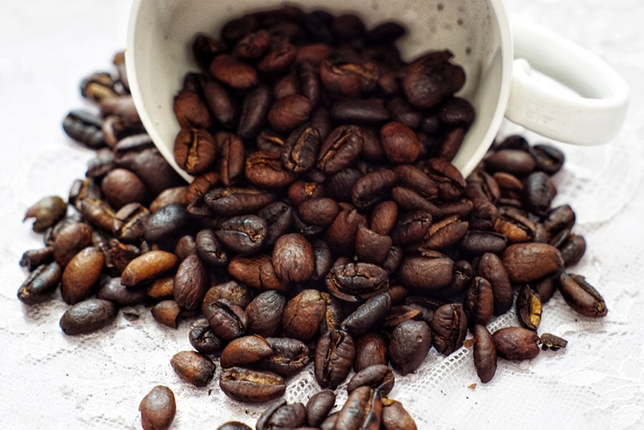

Arabica
Arabica beans are the most popular type of coffee. They have a smooth, slightly sweet flavor and lower caffeine content.

Robusta
Robusta beans are stronger and more bitter. They contain more caffeine and are often used in espresso blends.

Liberica
Liberica beans are less common and have a unique, bold flavor. They are grown in specific regions and have a smoky taste.
